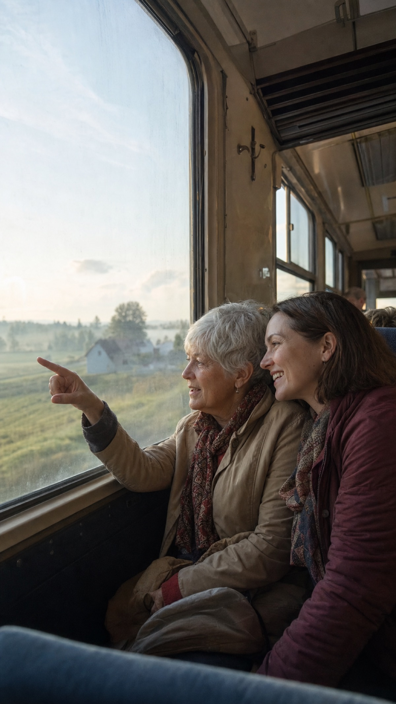

Momentro Guides · Travel memories
How long should a vacation video be?
Long enough to bring the trip back. Short enough that people will happily watch it again.

There is no correct number of minutes
A vacation video does not have to prove that you saw everything. It only has to give someone the feeling of the trip: the first view from the train, a wrong turn that became funny later, the quiet street after dinner, the people you were glad to be with.
That is why the useful question is not “How much footage do I have?” It is “Who do I hope will watch this, and when?”
Choose the version by the viewer
For a quick share with friends, a few minutes can be plenty. For a family film you plan to rewatch together, a little more room for arrivals, conversations, and the in-between moments can feel right. A longer trip may deserve both: a short version you can send, and a fuller one for yourselves.
These are not rules. If a six-minute film feels complete, it is complete. If one evening on a ferry needs another minute, let it have one.
Keep the moments that change the feeling
When several phones, cameras, and cards have followed you home, the volume can make every clip feel important. Most films become easier when you look for change instead: a new place, a new mood, a person appearing, the weather turning, everyone finally relaxing.
Two similar views do not always need two full scenes. Choose the one that makes you feel something first. The other can stay safely in the archive.
A shorter film is not a smaller memory. It is often the version you will actually return to.
Let the computer handle the long pass
Sorting a large collection from different devices and building a first draft takes real computer time. How long depends on the footage and the computer doing the work. You should not need to sit beside it while every clip is considered.
With Momentro, gather a selected set on your computer, start the analysis, and go on with your day. Come back to review the draft, make a small change if it needs one, then export the version that feels worth rewatching.
A simple way to decide
- Imagine the first person you want to watch it with.
- Choose the clips that would make them say, “Oh, I remember that.”
- Let each scene earn its time; do not keep it only because it exists.
- Make a first version, watch it once, and notice where your attention wanders.
- Keep the version you would be glad to play again next year.
Start with the moments you want to revisit.
Momentro helps you turn selected travel and family clips into a film you can review and export on your computer.